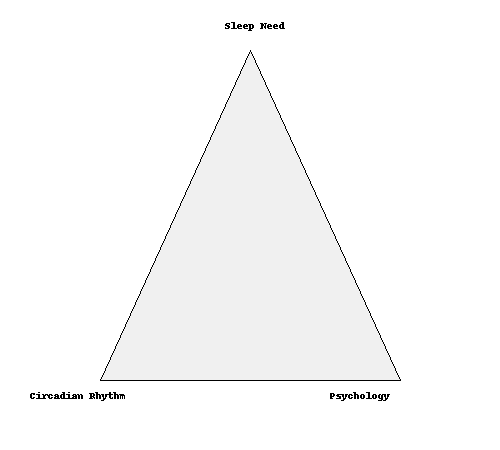

Welcome to the Triangle of Sleep

Hi! I’m Sofia, a circadian neuroscientist and sleep expert, and I created this tool to help you figure out your ideal sleep schedule and learn how to improve your sleep — not through hacks or fads, but with real science.
There are 3 pillars of healthy sleep. I call them the Triangle of Sleep. Just like a real triangle, you need all 3 corners in balance. Here’s what they are:
- 1. Sleep Need: This is how much sleep your body truly needs. If you try to sleep more than your body wants, you’ll wake up at night. If you get less, you’ll be tired. Sleep need is genetic — some people need 5 hours, others need 9. I’ve built a tool (below) to help you find yours.
- 2. Psychology: Stress, anxiety, and mental health challenges can block good sleep. Take care of your mind with exercise, therapy, yoga, and support from professionals if needed.
- 3. Circadian Clock: Your body runs on internal time — a rhythm guided by clock genes in every cell. To stay in sync:
- 🕖 Keep your wake and sleep time the same every day (even weekends)
- 🌞 Get bright light within 1 hour of waking (natural daylight or a SAD lamp)
- 🌙 Avoid bright light 30–60 min before bed. Use dim or red light instead.
Light tells your brain when to be awake or sleepy. Red light signals nighttime — like nature intended.
Scroll down to try the tool and discover your personal sleep need. Fix your rhythm, feel better, and have fun doing it 💤